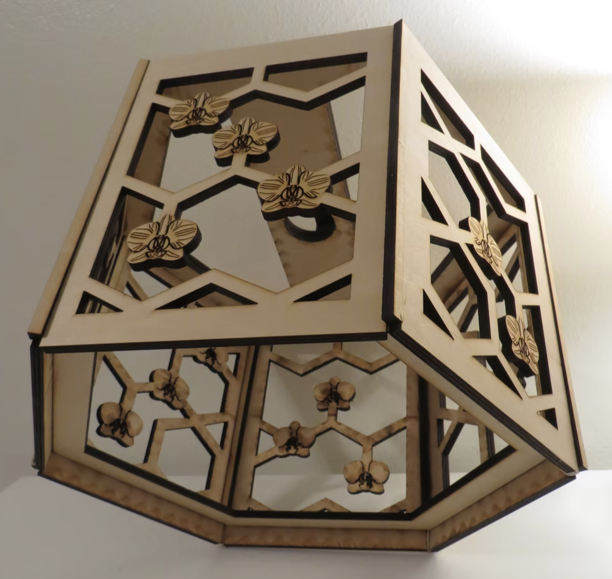
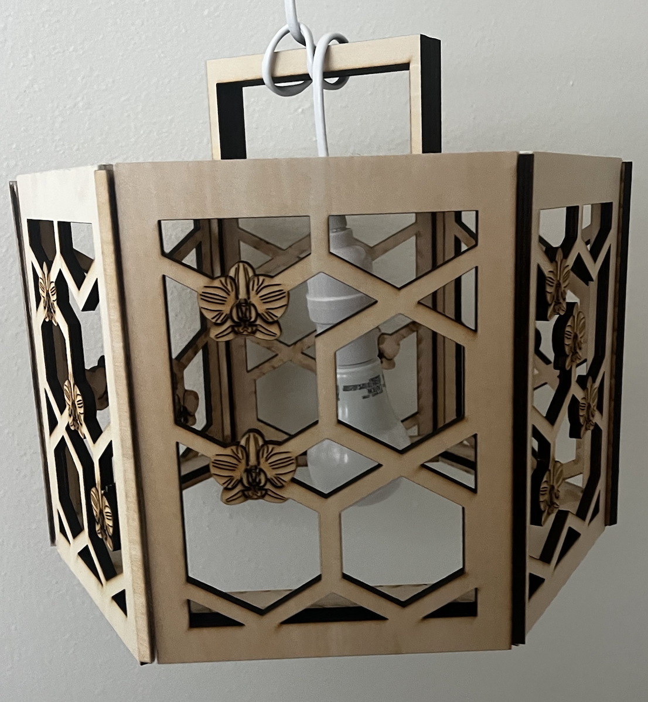

Orchid Code is a hanging light fixture that transforms the molecular chemistry of a floral fragrance into an illuminated sculptural piece. This chandelier serves as both functional lighting design and artwork, demonstrating how science can be reimagined through artistic interpretation and fabrication. We often overlook the sophisticated chemistry that occurs in common everyday pleasures such as scent. Designed in Adobe Illustrator and produced through laser cutting, this piece translates the chemical structures of floral fragrances, such as eugenol, linalool, and phenylpropanoid, into intricate panel designs that filter and shape light. Each orchid symbol replaces oxygen atoms within the molecular diagrams, creating a visual metaphor that connects the scientific and organic worlds.

